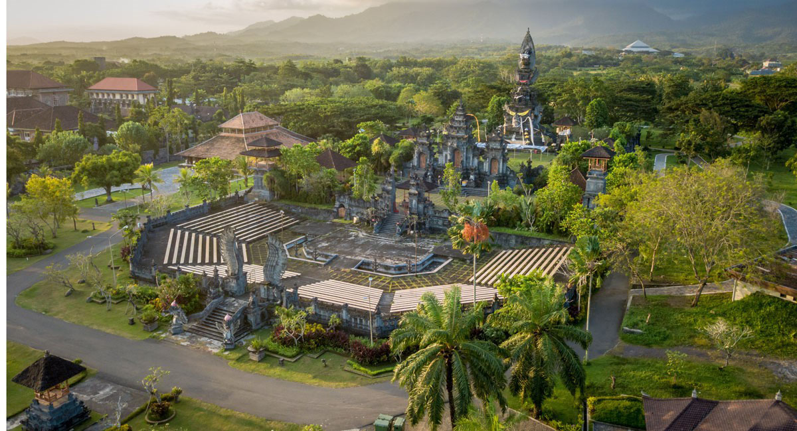

KABUPATEN JEMBRANA
Kabupaten Jembrana (bahasa Bali: ᬓᬩᬸᬧᬢᬾᬦ᭄ᬚᬾᬫ᭄ᬭᬦ Kabupatén Jĕmbrana) adalah sebuah wilayah kabupaten yang terletak di ujung Barat pulau Bali, Indonesia. Ibu kotanya adalah kecamatan Kecamatan Negara. Kabupaten ini berbatasan dengan Kabupaten Tabanan di Timur, Kabupaten Buleleng di Utara, Selat Bali di Barat dan Samudra Hindia di Selatan. Pada tahun 2021, penduduk kabupaten Jembrana berjumlah 321.931 jiwa dan pada pertengahan tahun 2024 berjumlah 329.353 jiwa.
Sejarah
Berdasarkan bukti-bukti arkeologis dapat diinterprestasikan bahwa munculnya pemukiman di Jembrana sudah sejak 6000 tahun yang lalu. Dari perspektif semiotik, asal-usul nama tempat atau kawasan mengacu nama-nama fauna dan flora. Munculnya nama Jembrana berasal dari kawasan hutan belantara (Jimbar-Wana) yang dihuni raja ular (Naga-Raja). Sifat-sifat mitologis dari penyebutan nama-nama tempat telah menjadi tradisi melalui cerita turun-temurun di kalangan penduduk.Berdasarkan cerita rakyat dan tradisi lisan (folklore) yang muncul, memberi inspirasi di kalangan pembangun lembaga kekuasaan tradisional (raja dan kerajaan) Raja dan pengikutnya yaitu rakyat yang berasal dari etnik Bali Hindu maupun dari etnik non Bali yang beragama Islam telah membangun kraton sebagai pusat pemerintahan yang diberi nama Puri Gede Jembrana pada awal abad XVII oleh I Gusti Made Yasa (penguasa Brangbang). Raja I yang memerintah di kraton (Puri) Gede Agung Jembrana adalah I Gusti Ngurah Jembrana. Selain kraton, diberikan pula rakyat pengikut (wadwa), busana kerajaan yang dilengkapi barang-barang pusaka berupa tombak dan tulup. Demikian pula keris pusaka yang diberi nama "Ki Tatas" untuk memperbesar kewibawaan kerajaan. Tercatat bahwa ada tiga orang raja yang berkuasa di pusat pemerintahan yaitu di Puri Agung Jembrana.
Sejak kekuasaan kerajaan dipegang oleh Raja Jembrana I Gusti Gede Seloka, Puri baru sebagai pusat pemerintahan dibangun. Puri yang dibangun itu diberi nama Puri Agung Negeri pada awal abad XIX yang kemudian lebih dikenal dengan nama Puri Agung Negara. Patut diketahui bahwa raja-raja yang memerintah di Kerajaan Jembrana berikutnya pun memusatkan birokrasi pemerintahannya di Puri Agung Negara. Patut dicatat pula bahwa ada dua periode birokrasi pemerintahan yang berpusat di Puri Agung Negara.